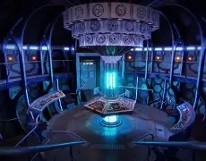
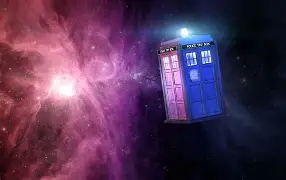
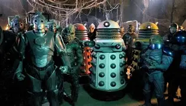

01
The Doctors
Thousands of stories, many faces.
Adventures in Time and Space!
One Time Lord. Infinite adventure. An entire universe.
Explore the UniverseA mysterious traveller who journeys through time and space.
The Doctor is a British science fiction television series that first aired in 1963. The show follows the adventures of the Doctor, a Time Lord from the planet Gallifrey
The Doctor travels in the TARDIS (Time and Relative Dimension in Space). The TARDIS is a spacecraft that has the appearance of a blue British police box.

BIGGERMeet the travellers and discover the worlds they explore. From alien planets to distant galaxies, the Doctor's adventures take us to places beyond our imagination.
Thousands of stories, many faces.

The Doctor's time machine and spacecraft.
Over 60 companions have traveled with the Doctor.
The Doctor's versatile tool for fixing things.

From Daleks to Cybermen, the Doctor faces many foes.
When the Doctor is mortally wounded, they can regenerate into a new body with a different appearance and personality. Each new incarnation brings another chance to explore, discover and save the universe!